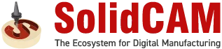

Coopérer intelligemment
ZOLLER collabore avec des partenaires afin de répondre au mieux aux besoins de ses clients.
ANCA
ANCA est leader sur le marché des rectifieuses CNC de haute qualité et des systèmes CNC. L'entreprise n'a cessé de se développer, grâce à une stratégie d'entreprise fondée sur l'innovation et la technologie, ainsi qu'à sa détermination à fabriquer des machines qui satisfont nos clients et dépassent leurs attentes.
ZOLLER propose une interface pour les affûteuses d'outils ANCA.
A+B Solutions GmbH
Forte de plus de 35 ans d'expérience, A+B Solutions dispose d'un savoir-faire complet en matière de conception et d'intégration de solutions de suivi et de contrôle de la production. En tant que partenaire de fournisseurs de premier plan tels que Siemens PLM Software, A+B Solutions propose à ses clients des solutions complètes : du conseil à l'intégration des systèmes et au service après-vente, en passant par la planification et la conception.
Les solutions d’A+B Solutions offrent des interfaces avec de nombreuses applications et, en tant que pivot central pour toutes les données de développement, de commande et de production, elles garantissent une structure de données cohérente et unifiée. A+B Solutions est le partenaire de développement de ZOLLER pour l’interfaçage de nos systèmes avec Siemens NX et Teamcenter.
Balluff
Forte de plus de 50 ans d'expérience dans le domaine des capteurs, la société Balluff GmbH est aujourd'hui l'un des fabricants les plus performants et les plus importants au monde dans le domaine des technologies de capteurs pour l'automatisation industrielle. Une technologie de pointe et une électronique ultramoderne – testées sous toutes les coutures dans son propre laboratoire certifié –, des solutions sur mesure adaptées aux applications spécifiques des clients, ainsi qu’un accompagnement personnalisé et un service après-vente de premier ordre constituent les atouts majeurs de cette entreprise dont le siège social est situé à Neuhausen a.d.F., à proximité immédiate de Stuttgart. Pour cela, 2 050 collaborateurs s’engagent en Allemagne et à l’étranger.
Balluff et ZOLLER coopèrent dans le domaine de la transmission des données d'outils grâce au codage et à l'identification des outils.
Camaix GmbH
La société Camaix propose des services dans les domaines de la fabrication de moules, de la construction mécanique et de la construction automobile. Ces dernières années notamment, elle s'est spécialisée dans les technologies aérospatiales ainsi que dans l'usinage complexe à 5 et 6 axes, pour lesquels elle a développé des solutions sur mesure.
L'interface Mastercam, simple et intuitive, permettant de gérer les outils ZOLLER, permet de programmer dans Mastercam à partir des géométries actuelles des outils assemblés et d'utiliser ces données pour une simulation et un contrôle des collisions.
Camtek GmbH
La société Camtek GmbH, située à Weinstadt près de Stuttgart, a été fondée en 1993 en tant que distributeur exclusif du système de CAO/FAO PEPS. En étroite collaboration avec des fabricants renommés de machines et de systèmes de commande, elle développe des post-processeurs de haute qualité et améliore en permanence ces deux systèmes.
ZOLLER vous propose une interface conviviale et simple d'utilisation avec le système de CAO/FAO PEPS.
Delcam
Delcam compte parmi les principaux développeurs et fournisseurs mondiaux de logiciels de CAO/FAO de pointe ainsi que de logiciels de mesure 3D indépendants du matériel destinés à l'industrie manufacturière. Aujourd’hui, Delcam est le plus grand développeur de logiciels de CAO/FAO au Royaume-Uni et dispose de succursales en Amérique du Nord, en Europe et en Asie. Les produits Delcam sont utilisés par plus de 50 000 entreprises dans plus de 80 pays. Parmi les produits Delcam figure notamment PowerMILL, le logiciel de FAO leader mondial.
Grâce à l'interface PowerMILL vers les solutions de gestion d'outils TMS de ZOLLER, vous bénéficiez d'un accès pratique à la vaste base de données ZOLLER.
DP Technology
DP Technology est l'un des principaux éditeurs et fournisseurs de logiciels de fabrication assistée par ordinateur (FAO) destinés à un large éventail de secteurs de l'industrie manufacturière. ESPRIT, le produit phare de DP Technology, est un système de programmation CN extrêmement performant et de haute qualité destiné au fraisage, au perçage, au tournage, à l'électroérosion à fil, ainsi qu'aux machines multifonctions telles que les centres de fraisage-tournage.
L'interface CAM ESPRIT, simple et intuitive, qui s'interface avec les solutions de gestion d'outils TMS de ZOLLER, permet un échange aisé des données d'outils.
Gibbs virtuel
Virtual Gibbs est un logiciel de FAO puissant et flexible qui simplifie considérablement la programmation CNC. Son interface conviviale améliore la productivité et en fait l'outil idéal pour les programmeurs CNC, les opérateurs d'usinage et les ingénieurs. Grâce à la prise en charge du fraisage de 2D à 5 axes, du tournage, de l'usinage sur mesure (MTM) et de l'électroérosion à fil, Virtual Gibbs permet une programmation rapide et fiable. Virtual Gibbs est la solution FAO de référence pour la programmation de centres d'usinage multicanaux complexes. Grâce à l'interface ZOLLER intégrée à Virtual Gibbs, vos outils sont créés de manière centralisée et en une seule fois, ce qui garantit efficacité et cohérence.
EN GRANDES LIGNES
Depuis près de 100 ans, GROB est leader dans le développement et la construction de systèmes de production et d'automatisation hautement innovants. Cette entreprise familiale est synonyme de produits haut de gamme, de technologies d'avenir et d'une fiabilité absolue. De la commercialisation à la mise en service, en passant par la conception et la fabrication, les ingénieurs et techniciens qualifiés de GROB répondent aux exigences les plus strictes de leurs clients.
Hermle
Les centres d'usinage
Hermle sont destinés à l'usinage rationnel d'outils, de moules et de pièces de série. Grâce à leur qualité et à leur grande précision, ils sont utilisés dans d'innombrables domaines de fabrication, notamment dans des secteurs exigeants tels que la technologie médicale, l'industrie optique, l'aéronautique et l'automobile, la fabrication d'outils et de moules, ainsi que chez leurs sous-traitants.
Les appareils de réglage et de mesure ZOLLER disposent, en option, d'une interface avec les centres d'usinage Hermle.
Ingersoll
Ingersoll développe et fabrique des outils standard et sur mesure équipés de plaquettes amovibles destinés à l'usinage. Ces outils sont utilisés dans le monde entier, notamment dans les secteurs de l'automobile et de la construction mécanique. Outre sa gamme standard, Ingersoll développe et conçoit des solutions sophistiquées répondant aux exigences de ses clients.
En collaboration avec Ingersoll, ZOLLER a notamment mis au point un concept novateur permettant de contrôler et de mesurer en atelier les fraises à denture et les fraises à profiler équipées de plaquettes amovibles.
GROUPE KOMET CERATIZIT
Grâce à des concepts d'outils innovants et à des solutions globales pour l'usinage des alésages, le groupe KOMET CERATIZIT est leader technologique mondial. Les clients de KOMET apprécient tout particulièrement ses services d'avant-garde, son assistance technique unique, ses séminaires spécialisés axés sur la pratique et ses outils haut de gamme pour le perçage, l'alésage et le filetage.
ZOLLER propose la solution pour le réglage et la mesure des outils du groupe KOMET CERATIZIT.
KROMI
La société KROMI Logistik AG propose aux entreprises industrielles, tant en Allemagne qu'à l'étranger, une externalisation complète de l'approvisionnement en outils de précision. L'accent est mis ici sur les outils d'usinage techniquement sophistiqués destinés à l'usinage des métaux et des plastiques.
Le pack SILVER de TMS Tool Management Solutions comprend l'interface avec KROMI.
MAKINO
MAKINO est reconnu comme l'un des principaux fournisseurs de technologies et de services dans le secteur des machines-outils. Sa gamme de produits comprend des centres d'usinage destinés à la fabrication de pièces ainsi qu'à la fabrication d'outils et de moules, avec un large éventail d'applications dans les secteurs de l'aéronautique et de l'aérospatiale, de l'industrie automobile, des machines agricoles et de chantier, de la construction mécanique générale et de la microtechnologie.
Les appareils de réglage et de mesure ZOLLER disposent, en option, d’une interface avec les centres d’usinage MAKINO.
moldtech GmbH
S'appuyant sur la gamme de produits de CAO/FAO TopSolid, MOLDTECH propose des solutions destinées à l'industrie de l'usinage. Grâce à ses services liés à la gamme TopSolid, Moldtech aide les utilisateurs à mener à bien plus rapidement et plus efficacement des tâches complexes en conception et en fabrication.
L'interface TopSolid'Cam, simple et intuitive, dédiée à la gestion des outils ZOLLER, vous permet de programmer dans TopSolid'Cam à partir des géométries actuelles des outils assemblés et d'utiliser ces données pour une simulation et un contrôle des collisions.
MTS AG
La société MTS AG développe et commercialise dans le monde entier des logiciels destinés aux rectifieuses à commande numérique. Le produit « tool-kit PROFESSIONAL » est reconnu dans le monde entier comme le logiciel destiné aux professionnels pour la production et le réaffûtage de pièces allant des plus simples aux plus complexes.
Les appareils de réglage et de mesure ZOLLER offrent une interface avec les affûteuses d'outils équipées de la solution logicielle de MTS.
NUM
NUM fabrique des commandes numériques (CNC) et les solutions logicielles associées. Dans le domaine de l'affûtage d'outils, NUM est leader du marché avec son logiciel NUMROTOplus.
Les appareils de réglage et de mesure ZOLLER offrent une interface avec les affûteuses d'outils équipées de la solution logicielle NUMROTOplus.
Okuma
Okuma est un fournisseur de premier plan de machines-outils innovantes, proposant une gamme de produits vaste et impressionnante. Celle-ci comprend des tours à commande numérique (CN) robustes et de haute précision, des machines multifonctions et des centres d'usinage équipés de l'excellente commande OSP.
Les appareils de réglage et de mesure ZOLLER proposent en option une interface avec les machines-outils Okuma.
Open Mind
OPEN MIND Technologies AG développe et commercialise des solutions CAO/FAO innovantes qui génèrent, à partir de modèles numériques, des programmes optimaux de fraisage et de tournage CN pour les machines-outils. Partout dans le monde, des fabricants issus des secteurs les plus divers choisissent les produits OPEN MIND, car ceux-ci leur permettent de produire de manière rentable et efficace. Il en résulte des modèles, des prototypes, des outils, des moules, des pièces prismatiques, des composants monoblocs et bien plus encore, d’une qualité impressionnante.
Grâce à l’interface hyperMILL® vers les solutions de gestion d’outils TMS de ZOLLER, vous bénéficiez d’un accès pratique à la vaste base de données ZOLLER.
OPUS
Depuis plus de 30 ans, OPUS® fournit des solutions adaptées aux besoins spécifiques dans les domaines de la FAO, de la MDE et de la DNC. Plus de 4 000 installations dans près de 1 000 entreprises parlent d'elles-mêmes. OPUS® est adapté avec précision aux exigences des sites de production et perfectionné en collaboration avec les utilisateurs.
L'interface OPUS, simple et intuitive, qui se connecte aux solutions de gestion d'outils TMS de ZOLLER, permet un transfert de données aisé entre la base de données ZOLLER et le système FAO OPUS.
Sacs
Saacke, une entreprise familiale innovante forte d'une tradition de plus de 100 ans, fait figure de référence mondiale dans les domaines des affûteuses d'outils ainsi que des outils de taillage et de profilage.
Les appareils de réglage et de mesure ZOLLER proposent en option une interface avec les affûteuses d'outils Saacke.
Siemens Industry Software GmbH
Siemens PLM Software, une unité opérationnelle de la division Siemens Digital Factory, est l'un des principaux fournisseurs mondiaux de logiciels, de systèmes et de services destinés à la gestion du cycle de vie des produits (PLM) et à la gestion des opérations de fabrication (MOM), avec plus de 15 millions d’utilisateurs sous licence et plus de 140 000 clients à travers le monde.
En tant que partenaire Siemens Software & Technology, ZOLLER propose des interfaces avec Siemens Teamcenter pour le transfert des données théoriques et réelles depuis l’appareil de réglage et de mesure et de contrôle de ZOLLER vers la machine-outil et vers la suite logicielle intégrée de développement et de fabrication de produits Siemens NX, pour un échange sécurisé de données avec les solutions de gestion d’outils (TMS) via la base de données d’outils z.One de ZOLLER.
SOFLEX
SOFLEX a introduit les premiers systèmes de fabrication flexibles en Allemagne et, en tant que spin-off de l'université de Stuttgart, est présente depuis le tout début dans ce secteur industriel passionnant et exigeant. Depuis 1984, les systèmes de contrôle, y compris la gestion des cellules et la gestion de la production, constituent son cœur de métier. SOFLEX bénéficie d’impulsions précieuses grâce à un réseau très diversifié d’universités et d’établissements d’enseignement supérieur.
L'appareil de réglage et de mesure ZOLLER intègre une interface avec SOFLEX, ce qui permet de transférer les ordres de planification vers l'appareil ZOLLER. De plus, l'appareil de réglage et de mesure demande de manière entièrement automatique la liste des outils nécessaires via l'interface ZOLLER-SOFLEX-PCS. Une fois le réglage effectué sur l’appareil de réglage et de mesure ZOLLER, les données mesurées sont directement transmises au système SOFLEX-PCS, puis SOFLEX-PCS transfère les données d’outillage à la machine lors du chargement de l’outil.
SolidCAM GmbH
SolidCAM compte parmi les principaux fournisseurs internationaux de systèmes CAO/FAO intégrés destinés à la programmation FAO efficace dans les secteurs de la fabrication mécanique, de l'électronique, du médical, des biens de consommation, de la conception de machines, de l'automobile et de l'aéronautique, ainsi que dans la fabrication de moules et d'outils. Avec ses produits SolidCAM et InventorCAM, SolidCAM offre une intégration transparente dans SolidWorks et Autodesk Inventor. Grâce à la technologie révolutionnaire et brevetée iMachining et à SolidCAM MillTurn plus, ce logiciel prend en charge l'ensemble des applications CNC, y compris les centres de tournage-fraisage complexes et les tours à poupée mobile.
Plus de 75 collaborateurs répartis sur huit sites, dont trois centres technologiques, garantissent une assistance utilisateur compétente et un service technique sur site de premier ordre sur l’ensemble du territoire allemand.
L'interface SolidCAM, simple et intuitive, dédiée à la gestion des outils ZOLLER permet, via les solutions TMS (Tool Management Solutions), un accès aisé à la vaste base de données d'outils ZOLLER. Les outils complets pour le fraisage, le tournage et le tournage-fraisage peuvent être utilisés sous forme de données d'outils 3D directement dans SolidCAM à des fins de simulation et de contrôle des collisions.

SW
SW
Pour les fabricants qui souhaitent réduire leurs coûts de production et leur encombrement au sol, tout en relevant les défis liés à la pénurie de main-d'œuvre, SW propose une large gamme de machines CNC à un ou plusieurs broches, des solutions d'automatisation et des systèmes complets. SW fournit depuis longtemps des machines à de nombreux secteurs industriels, notamment dans le cadre des réglementations ITAR et FFL. Nos solutions d'automatisation intégrables permettent de réduire les coûts de main-d'œuvre, tandis que notre concept multibroches optimise l'espace au sol disponible.
Takisawa Machine Tool Co. Ltd
Depuis la création de ce fabricant de machines-outils en 1922, TAKISAWA séduit par son esprit pionnier et sa passion. Fort d'une expérience considérable et d'une tradition de près de 100 ans, TAKISAWA propose aujourd'hui une large gamme de produits innovants et à la pointe de la technologie.
ZOLLER met à disposition une interface permettant le transfert des données d'outils vers TAKISAWA.
Tebis AG
La société Tebis AG compte parmi les leaders mondiaux du marché et de la technologie dans les domaines de la CAO/FAO et des systèmes MES. Grâce aux logiciels Tebis, les clients conçoivent, planifient et fabriquent des modèles, des moules et des composants haut de gamme de manière efficace, fiable et avec une qualité optimale. Des équipes composées de spécialistes du conseil et de la mise en œuvre, forts d’une solide expérience sur le terrain, élaborent des stratégies pour des processus CAO/FAO efficaces et sûrs, les mettent en œuvre chez le client et garantissent ainsi un avantage technologique et concurrentiel durable. L’entreprise, dont le siège se trouve à Martinsried, près de Munich, dispose de 9 succursales Tebis à travers le monde ainsi que d’agences commerciales dans 8 autres pays. Depuis plus de 30 ans, l’automatisation est la clé du succès de Tebis. Pour ses clients, Tebis se positionne comme un pionnier de l’Industrie 4.0.
L'interface Tebis, simple et intuitive, qui relie les solutions de gestion d'outils ZOLLER TMS, permet un transfert aisé des données d'outils et des fiches de réglage, y compris les composants individuels et les outils complets, entre la base de données d'outils z.One de ZOLLER et le système FAO Tebis.
Vollmer
Avec ses 14 sites et une gamme complète de machines,
le groupe Vollmer s'impose avec succès dans le monde entier en tant que spécialiste de l'usinage d'outils, tant dans le domaine de la production que dans celui des services. La gamme de produits de ce leader technologique comprend des machines de rectification, d'électroérosion et d'usinage à la pointe de la technologie pour les outils rotatifs, les scies circulaires et les scies à ruban destinées aux industries du bois et de la métallurgie.
Appareils de réglage et de mesure ZOLLER – parfaitement connectés grâce à une interface avec les rectifieuses Vollmer.
À propos de DSC Software AG
VOTRE PARTENAIRE POUR UN PLM INTÉGRÉ
Chez DSC Software AG, nous mettons toute notre passion au service de la convergence entre les personnes, les processus et les systèmes. Vos données produit sont au cœur de nos préoccupations.
Laissez-vous gagner par notre passion pour l’intégration. Innovants, humains et axés sur le partenariat, nous vous accompagnons dans la mise en œuvre concrète de votre stratégie de numérisation : avec SAP comme base de données numérique centrale pour vos processus métier, complétée par des solutions sur mesure issues des meilleures pratiques.
En tant que partenaire SAP de longue date, nous sommes à vos côtés en tant que partenaire expérimenté et disposant d’un excellent réseau. L’équipe DSC cumule plus de 1 100 ans de savoir-faire en PLM et n’a qu’un seul objectif : concevoir la meilleure solution possible pour répondre à vos défis spécifiques. Pour que vous puissiez transformer encore plus rapidement vos idées géniales en produits intelligents et rester à la pointe de l’avenir.